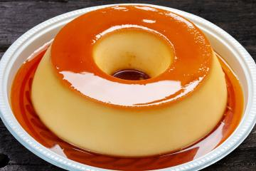

PUDIM
- Nunca desenforme quente, pois ele ainda não adquiriu a textura de corte e não estará firme. Para desenformar o pudim, é necessário deixá-lo esfriar pelo menos umas 3 h na geladeira. "O ideal é desenformar o pudim quando estiver frio. Também vale aquecer o fundo da forma rapidamente na chama do fogão ou em banho-maria.
- Se sentiu que a própria massa do pudim está mais mole do que costuma, o truque é adicionar amido de milho, um espessante muito usado na confeitaria. Dissolva uma colher (sopa) de amido em um pouco de leite (apenas o bastante para dissolver), coloque na massa e leve ao fogo até engrossar.
- Outro truque muito utilizado para que o doce não grude na assadeira é colocar a forma em um recipiente com água quente. Deixe-a descansar ali por alguns minutos e pronto, seu pudim estará no ponto para ser desenformado intacto!
